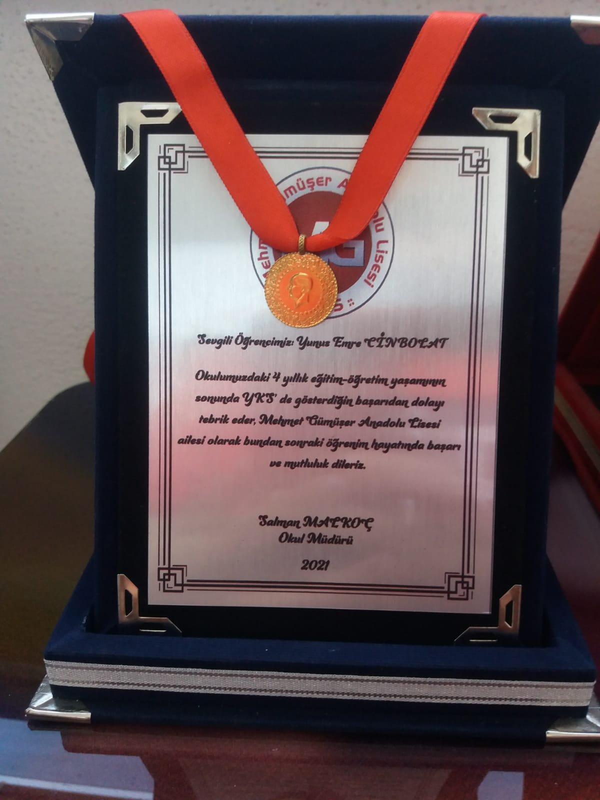

Bildiği Diller ve Seviyesi
C 85
HTML 95
CSS 80
Pyhton 50
Javascript 50
EĞİTİMİ
Lise: Mehmet Gümüşer Anadolu Lisesi
Üniversite: İnönü Üniversitesi (Yazılım Mühendisliği)

BAŞARILARI
Ortaokul okul 3.sü
Ortaokulda bir yarışmada okul 1.si
Lise düzeyinde okul 1.liği
2 plaket 2 madalya sahibi
